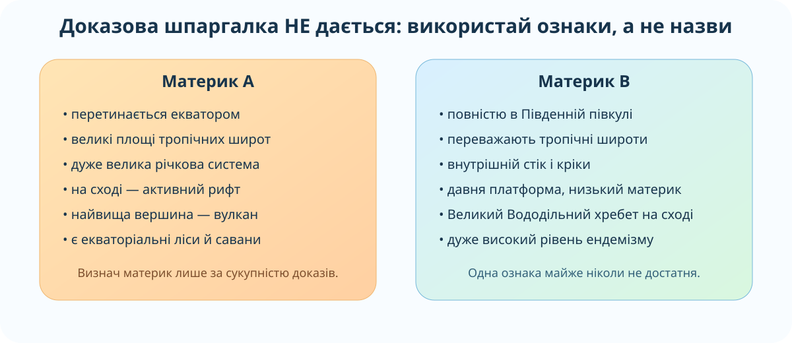
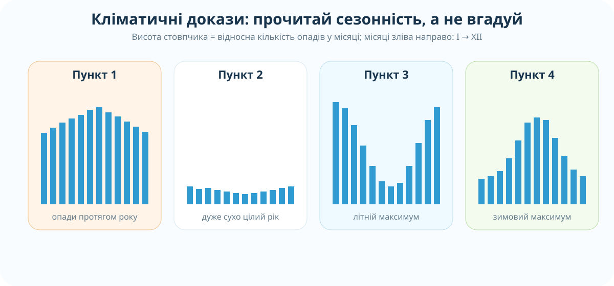

Узагальнювальна діагностика за двома материками. Тут немає блоку готової теорії до здачі: потрібно застосувати карти, закономірності й докази, а не відтворити визначення.
🌍 Африка🦘 Австралія🗺️ карти📊 дані✅ 10 балів
Формат роботи
1. Вхід персональний
Спочатку введіть прізвище, ім’я та клас. Без цього завдання не відкриються.
2. Карти дозволені
Це діагностика вміння читати географічні джерела. Можна користуватися вбудованими картами, але не готовими відповідями.
3. Після здачі
Ви отримаєте бал, розбір помилок і персональний наступний крок для корекції.
Вхід до роботи
Робота заблокована.
Діагностична робота — 10 завдань / 10 балів
Кожне завдання — 1 бал. У частині завдань потрібно зіставити кілька доказів, а не знайти одну очевидну ознаку.
Картографічні джерела
OpenStreetMap: Африка.
OpenStreetMap: Австралія.
1. Учень стверджує: «Африка й Австралія однаково розташовані відносно екватора, бо обидві лежать переважно в тропіках». Яка перевірка спростовує це твердження?
2. Який ланцюг найкраще пояснює Східноафриканські рифтові озера?

3. За схемою «Материк B» — це Австралія. Яка комбінація доказів є найсильнішою?
4. Чому Австралія загалом сухіша за Африку, хоча обидва материки мають великі площі в тропічних широтах?

5. Який пункт найкраще відповідає екваторіальному клімату басейну Конго?
6. Який пункт найкраще відповідає середземноморському типу клімату південного заходу Австралії?
7. Чому твердження «довша річка завжди має більший стік» хибне? Порівняйте Ніл і Конго.
8. Яке пояснення найкраще пов’язує давню геологічну історію Австралії з її корисними копалинами?
9. Чому ізоляція Австралії сама по собі не є повним поясненням високого ендемізму?
10. На карті густоти населення видно дуже щільне заселення долини Нілу та східного узбережжя Австралії. Який висновок найбільш коректний?
Розбір після здачі
Що перевірялося
Географічне положення, тектоніка й рельєф, клімат, води, природні зони та органічний світ, ресурси й розселення населення Африки та Австралії.
Головний принцип
Надійний географічний висновок спирається на кілька незалежних доказів. Одна ознака — «пустеля», «тропіки», «узбережжя» — часто не дозволяє зробити правильний висновок.